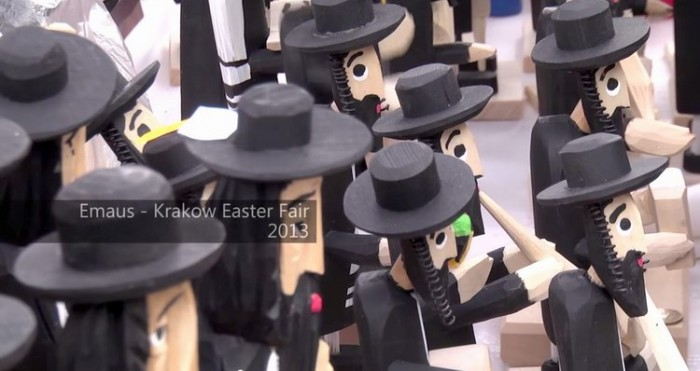
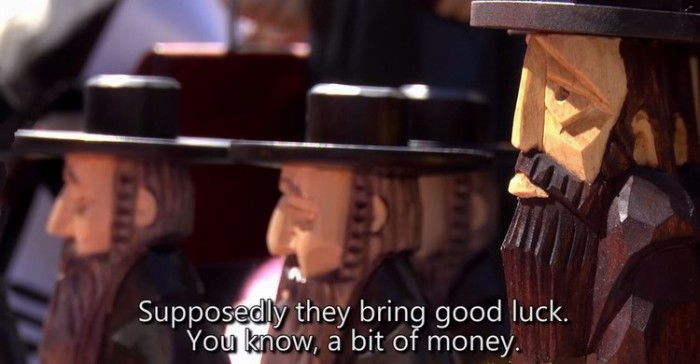
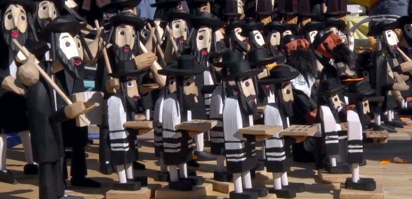
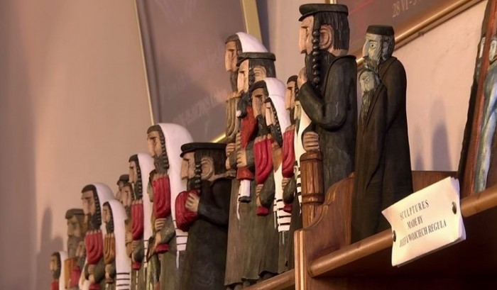

The Jew with a Coin
These figures serve as... a Jewish house spirit. That is exactly what they are called, "A Jew for luck" (to a Russian-Jewish ear it sounds even better: Żyd na szczęście), and they inhabit a great many Polish homes and firms.
Source (in Russian). Translated from Russian.
From the editor:
The day after Yom HaShoah (the day when Israel remembers the 6 million Jews who perished in the Second World War) I came across an article in one of the Hebrew almanacs. I searched the web and found it in Russian. I could not resist bringing it into my blog (this is my field after all: "Jews + art"). To complete the picture, below the article I have placed a fragment from Wikipedia on the Jewish question in Poland. It makes sense to look at all of this together. I wanted to place it between Holocaust Day and Israel's Independence Day, the day of its rebirth.
I advise reading this together with "JEWISH IMAGES in the Work of the Catholic Józef Regula".
***
I am a folklore element and a hereditary house spirit!
There are traditions in Poland that make you freeze in the middle of the Rzeczpospolita in a deep "pardon?". Today I will tell you about one such young tradition, whose beginning goes back to the turn of the 20th and 21st centuries, while the conditions for its formation lie deep in the sand of the centuries.
If you have ever been in Polish towns, you may have noticed stalls selling wooden figures of Jews of the "Hasid" model and small pictures showing a grey-bearded "aid" (Jew) in a kippah or a hat counting money. On my first visit to Poland what I saw did not please me at all. "Oh yes," I thought, "they got rid of all their own Jews, and now they make money on images of them." And at that moment I was further from the truth than ever. That is, of course they make money, but that is not at all the main thing in this story.

The thing is that these figures serve as... a Jewish house spirit. That is exactly what they are called, "A Jew for luck" (to a Russian-Jewish ear it sounds even better: Żyd na szczęście), and they inhabit a great many Polish homes and firms. There are two main types of "house Jew": the "Jew with a coin" (żyd z pieniążkiem) and the "Jew with a lemon" (żyd z cytryną). The first ensures financial prosperity in a Polish home, the second variety of food and health.

If you plunge into the depths of the Polish internet and look for information on this phenomenon, you will inevitably come across all sorts of forums, chats and articles discussing how and where to "hang a Jew for luck" properly, or a careful analysis of the advantages of the Żyd over the elephants and toads that bring money according to Indian and Chinese traditions.
To activate the "house Jew" a number of rules must be followed.
First, it is absolutely useless to buy him. Someone must give you a Jew for luck. It is important that the figure or picture shows an elderly Jew with a good-natured or concentrated expression on his face. It would be good if, besides a coin in his hands, he had a bag of money and account books.
Second, the "house Jew" is best hung in the porch or hallway (for an unbeliever has no business in the rooms of a good Catholic), on the left side of the front door.
Third, on entering the house you must turn your face towards the "house Jew", or he will take offence.
Fifth, and most important: on Saturdays or on New Year's Eve the Żyd must be turned upside down so that all the money he has counted during the week or the year falls out of his bag straight onto the honest Pole's table. (From the editor: I did not understand at once why on Saturdays in particular. It is simple: Saturday, in the Pole's view, is the only day when it is possible to take money away from the Żyd. After all, the Jew devotes the Sabbath to his God. And Jewish tradition forbids on the Sabbath not only work but even discussing business matters, let alone touching money. It is on Saturdays that he lets the money out of his hands.)

This astonishing tradition and its rapid spread throughout Poland lead to various reflections and become the occasion for many discussions: about stereotypes, about history, about psychology and, of course, about antisemitism. Let me say at once that Poles absolutely do not understand what could be antisemitic about it. He (the house Jew, that is) is good, isn't he? He is! They love him? They do! They take care of him? They do! They hang him in the place of honour? They do! Look, they have even worked out a whole philosophy, called "learn from the Jew". Hang his bright image next to the stock-exchange tables and watch how the Jew in the picture ponders the investment of every coin, even though he has a whole sack of this money. And yet in the past, in peasant homes, a bone from a Jewish cemetery was sometimes hung in the house for luck, and on Wet Monday after Easter people simply spat on a figure of a Żyd. It's not like that now, surely?!..
In short, if you, like me, cannot sort out your feelings and want to understand more, I sincerely recommend watching a short film by Erica Lehrer about this tradition. The film is in Polish and English, so everyone will understand it.
From the editor:
Someone will say: Jews are always whining; at the slightest thing, at once there are cries and accusations of antisemitism. Now these harmless Polish "Jewish matryoshkas". To understand even a little of what is at stake, it is important to look at the text above at least in the context of how Wikipedia describes the situation. I do not want to say anything bad about the Poles. God is their Judge. The Nazis executed more than 2,000 Poles who rescued or helped Jews during the occupation.
But the spirit that roams Europe and the whole world: that is what my reflections are about...
Here is a small fragment from the article THE HOLOCAUST IN POLAND (Wikipedia, in Russian):
Jewish ghettos were organised on the territory of Poland, and the largest death camps, intended for the mass extermination of people, were built there. In the death camps in Poland Jews from other countries occupied by the Nazis were also exterminated, as part of the programme of the final solution of the Jewish question.
Of the 3.3 million Jews living in Poland at the beginning of September 1939, 2.8 million, that is 85%, perished during the war.
AFTER the liberation of Poland from German occupation in 1944, the surviving Jews began to return. Almost at the same time Jews began to be persecuted by Poles. The Poles' unwillingness to return Jewish property appropriated during the war, and conflicts with the new authorities, among whom there were Jews, caused numerous attacks on Jews: from November 1944 to December 1945, 351 Jews were killed in such attacks. By the end of 1947 between 500 and 1,500 Jews had been killed.
The Kielce pogrom (July 1946; 40 Jews were killed and about 50 wounded) caused a mass migration of Jews from Poland: after the pogrom (during June–August) 54,000 Jews fled. The authorities attributed the pogrom to "reactionaries"; the Catholic Church, in the person of Primate Hlond, blamed the Jews themselves for the pogrom. The persecution of Jews returning to Poland forced them to flee not only from Poland but from Europe altogether.
I advise reading this together with "JEWISH IMAGES in the Work of the Catholic Józef Regula".
